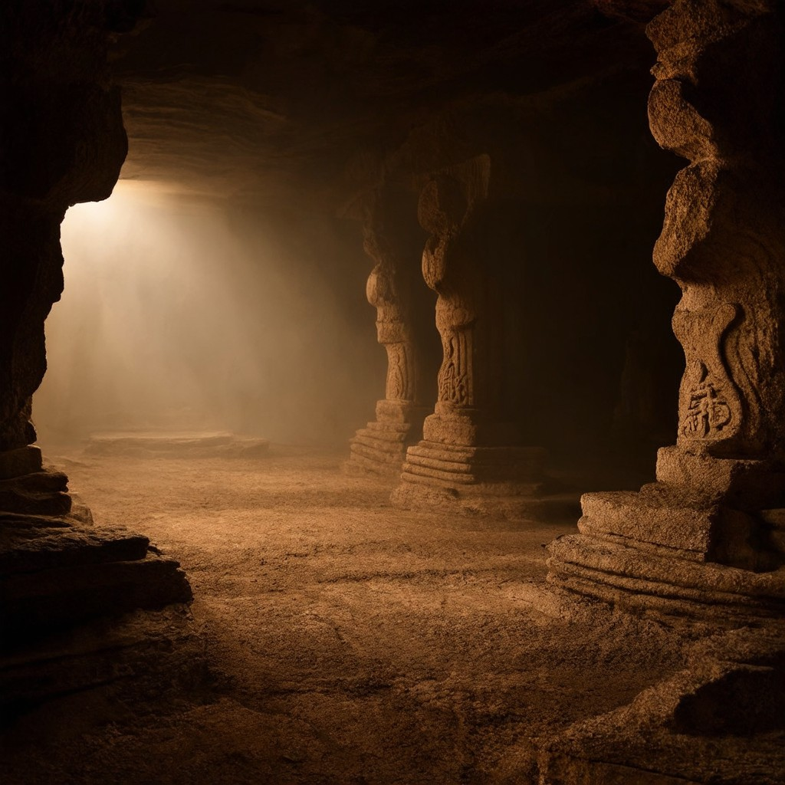

The oldest stone structures on Earth predate the pyramids by seven thousand years. This book traces what really happened — the neuroscience, the archaeology, and the trade we never knew we made.

Not what happened. Why it really happened beneath the surface.